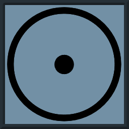

World Profile Key
###-###
Diameter, Atmosphere, Hydrographics - Population Range, Tech level, Port Class
- World Size - Number of hexes on edge of world hex/Diameter in 1000's of miles
- Atmosphere
- A - Breathable (6-7)
- B - Thick/Inert air Requires a filter, (8-A)
- C - Thin/No air requires Vacc Suit (0-5)
- D - Invasive air Requires vac and 1/2 duration (B)
- E - Corrosive air Requires vac and 1/4 duration (C)
- F - Corrosive+invasive Requires Vac and 1/8 duration (D+)
- Hydrographics- # * 10% = % planet covered by water.
- Population range - in the 10^pop
- Tech Level
- 0 Neolithic
- 1 Medieval
- 2 Industrial
- 3 Modern
- 4 Postech
- 5 Pretech
- 6 Magic
- X Same as Main World
- Port Class
- A - Can build and upgrade capital class ships or smaller
- B - Can build and upgrade cruiser class ships or smaller
- C - Can build and maintain frigate class ships or smaller
- F - Can only provide Fuel
- 1 - Only has a pad to land on
- 0 - Nothing
Vitebsk Prime

674-83B
Key Details
- System Population Center - The most heavily populated planet in the system.
- Tidally Locked - One side of the planetary surface eternally faces the sun, the other away.
- Urbanised Surface - The habitable area between the two zones is covered in arcologies.
- Solarpunk - Due to ready access to high intensity solar energy, the arcologies are plant filled and pollution free.
- Anthropomorph Sub-Populace - There is a small but significant portion of the populace who have gene-modded or "spliced" themselves to have animal features.
Orbiting Bodies
Ivanovo
740-0X0
Key Details
- Orbital Colonies - most of the planets moons and lagrange points have had colonies constructed there.
- Megacorps - Most of the systems major corporations are domiciled out here, particularly on Krovengard.
Orbiting Bodies
- Krovengrad - The second most heavily populated body in the system with tens of millions of citizens.
- Smolensk
The Chuluu Belts
000-2X1,000-6XF
Key Details
- Resource Asteroids - Many important colonies out here are focused on mining and extraction based work.
- War Torn - Recently attempted to break free of Vitebskan control. They lost and now seperatist groups and pirates roam the belts.
Sur
423-2XF
Key Details
- Ice World - The planet is an Iceball and commonly used as a refuelling station between the inner and outer planets.
Orbiting Bodies
Salalah
964-000
Key Details
- Radiation World - High conentrations of radiactive materials means only small temporary bases are ever established. They are never inhabited for long.
Zarahemla
Size 26
Key Details
- Gas Giant
- Orbits a Secondary Sun
Orbiting Bodies
- Xochitl
- Oxtilpa
- Caldlay
- Ifreann
- Locdun